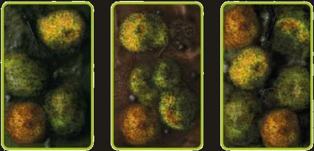
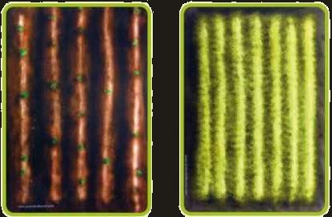
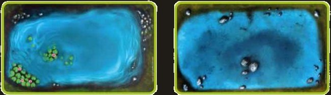
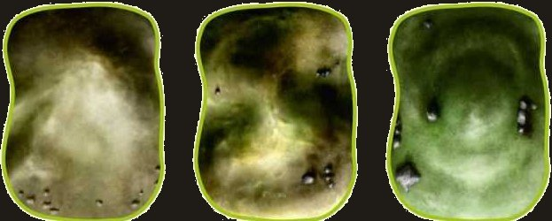
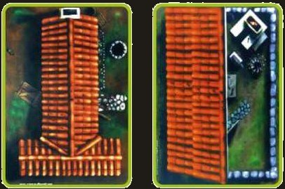
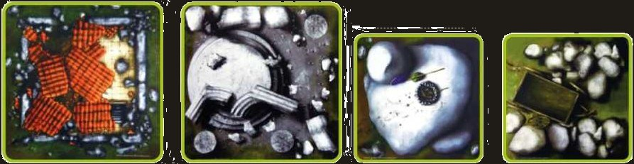

Informazioni utili prima del torneo
- Crea una lista da 2.000 punti con l’app ufficiale Conquest: Companion. Puoi scaricarla dalla pagina ufficiale o da Android o Apple Stores;
- Di aver inviato su Longshanks la lista in pdf entro la mezzanotte del giorno indicato;
- Di aver stampato una copia della tua lista da mettere a disposizione del tuo avversario durante l’evento, qualora fosse necessario;
- Inoltre, come da regole ufficiali della Parabellum, non verrà accettato nessun tipo di proxy, così come non verrà accettato alcun tipo di modello inedito. Le conversioni sono ammesse, fintanto che almeno il 70% del modello abbia componenti originali Parabellum Games;
- Gli upgrade alle unità (come gli Standard Bearers e simili) e gli ufficiali devono essere presenti nella lista dell’armata, e se possibile raccomandiamo caldamente di rappresentarli sul tavolo da gioco;
- Sebbene non siano obbligatori, i modelli e i reggimenti dipinti sono molto apprezzati. Poiché sono ancora in corso gli ultimi aggiornamenti, applicheremo un’eccezione perché i Reggimenti di fanteria possano includere almeno 3 di 4 modelli per ciascuno stand. Questa regola non verrà applicata ai Reggimenti di Bruti, Cavalleria o Mostri, poiché questo potrebbe creare confusione e fraintendimenti durante il gioco.
Tipi di terreno

Foreste
Special Rules

Campi
Special Rules

Acqua
Special Rules

Colline
Special Rules

Edifici
Special Rules

Rovine e rocce
Special Rules
Regole speciali
- Obscuring
- A Stand drawing Line of Sight through this piece of Zonal Terrain as part of a Volley Action and/or Targets a Regiment with all of its Stands in a piece of Obscuring Zonal Terrain, halves the X value in its Barrage (X) Special Rule (rounding up) to a minimum of 1. Should a Regiment have all of its Stands within this piece of Zonal Terrain, then its Stands suffer no penalty to their Barrage (X) Special Rule as a result of drawing Line of Sight through the same piece of Zonal Terrain the entire Regiment is in. If a Stand within this piece of Zonal Terrain is drawing Line of Sight through another piece of Obscuring Zonal Terrain it suffers the penalty to its Barrage (X) Special Rule as normal.
- Hindering
- When at least half of a Regiment’s Stands (rounding up) Charge through this piece of Zonal Terrain, the Regiment does not inflict any Impact Attacks during that Charge Action. In addition, Medium and Heavy Regiments do not benefit from the Inspired Special Rule during a Round in which at least half of their Stands (rounding up) Charged through this piece of Zonal Terrain.
- Traversable
- This rule is commonly used for pieces of Terrain a Regiment would often find itself traversing through rather than over, such as a Forest or Thicket. This piece of Zonal Terrain does not add its Size or Elevation to the total Size of a Regiment. For example, an Infantry Regiment (Size 1) traversing a piece of Forest (Size 3) would not be considered Size (4); it would instead be considered Size (1).
- Dangerous Terrain
- When a Regiment moves onto, or through, this piece of Zonal Terrain, Roll a die for each Stand that moves onto or through it. On a roll of “6”, the Regiment suffers 1 Wound. Cavalry and Chariot Regiments will suffer 2 Wounds for each roll of “6”. You may not take Defense Rolls against a Wound caused by Dangerous Terrain. You do not need to Test Morale against Wounds caused by Dangerous Terrain.
- Water
- If a Regiment has at least half its total Stands (rounding up) within this piece of Zonal Terrain, it suffers a -1 penalty to its Clash Characteristic, to a minimum of 1.
- Elevation (X)
- This rule is commonly used for rock formations, buildings or other raised areas. You’ll normally want to grant the Elevated (2) rule in the case of an elevated feature, but may want to agree on a higher value with your opponent for things like high towers, castle walls, etc. Hills are always considered Size 2 and Forests are always considered Size 3.
- Obstructing
- Zonal Terrain with this Special Rule does not allow Line of Sight to be drawn through it. Stands that are on a piece of Obstructing Zonal Terrain can draw Line of Sight to Enemy Regiments and vice versa.
- Impassable
- If there are any Terrain features on the battlefield that you and your opponent agree are unsuitable for Regiments to traverse, simply agree that they are Impassable Terrain. Regiments cannot move through Impassable Terrain.
Ultima regola
Per ogni domanda o dubbio, vi chiediamo di inviare una mail a nicolo.olivieri9@gmail.com:
vi risponderà il più rapidamente possibile.